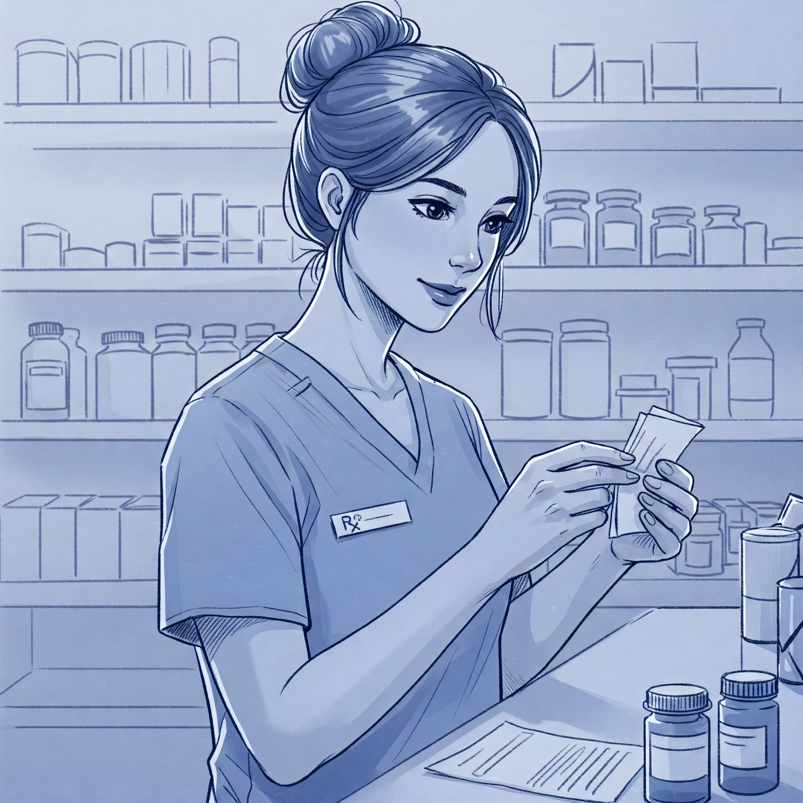

Garanta uma vida longa e cheia de alegria para o seu melhor amigo
A PetLife é o seu refúgio de confiança para o cuidado completo do seu pet. Com profissionais dedicados e serviços abrangentes, oferecemos uma experiência acolhedora e personalizada, garantindo o bem-estar, a saúde e a felicidade dos seus animais de estimação.
Marque uma consulta Conheça nossa clínicaCuidado Veterinário de Qualidade
Nossa clínica veterinária é o local onde a paixão pelos animais se une à excelência em cuidados veterinários. Sob a liderança da Dra. Vivien Reid, uma profissional altamente qualificada e comprometida, oferecemos serviços de saúde e bem-estar para animais de estimação de todas as espécies. Venha conhecer nossa clínica e desfrute da atenção personalizada e do carinho que seu pet merece.
- Consultas de rotina e exames de saúde abrangentes
- Vacinação e imunização
- Cirurgias e procedimentos veterinários
- Tratamento e controle de doenças
- Odontologia veterinária
- Atendimento de emergência 24 horas
- Nutrição e aconselhamento alimentar personalizado
Venha conferir o nosso petshop e farmácia
Além de ser uma clínica veterinária de confiança, também contamos com um completo petshop e farmácia. Nosso petshop oferece uma ampla seleção de produtos de alta qualidade, desde alimentos balanceados e petiscos deliciosos até brinquedos divertidos e acessórios elegantes para o seu pet. Na nossa farmácia, você encontrará uma variedade de medicamentos, produtos de cuidados e suplementos recomendados pelos nossos veterinários, garantindo que o bem-estar e a saúde do seu amado pet estejam sempre em boas mãos. Tudo o que você precisa para cuidar e mimar o seu pet está aqui, no nosso petshop e farmácia, com a mesma dedicação e qualidade que nos tornou referência na área veterinária.
Ficou algum dúvida?
Quais serviços são oferecidos pela clínica veterinária da PetLife?
A clínica da PetLife oferece uma ampla gama de serviços, incluindo consultas de rotina, vacinação, cirurgias, tratamento de doenças, cuidados odontológicos, atendimento de emergência 24 horas, programas de prevenção de pulgas, carrapatos e vermes, entre outros. Nosso objetivo é fornecer cuidados abrangentes e personalizados para garantir a saúde e o bem-estar do seu pet.
Quais espécies de animais a clínica veterinária atende?
A PetLife atende cães, gatos e animais exóticos, incluindo aves, répteis e pequenos mamíferos. Nossa equipe é especializada no cuidado de diferentes espécies, garantindo um atendimento personalizado e de alta qualidade para cada pet.
A clínica veterinária da PetLife possui serviços de emergência?
Sim! A clínica veterinária da PetLife oferece atendimento de emergência 24 horas para garantir que seu pet receba cuidados imediatos em qualquer situação. Nossa equipe está sempre pronta para agir rapidamente em casos urgentes, proporcionando o melhor tratamento possível para o seu animal de estimação.
A clínica oferece serviços de banho e tosa?
Sim! A PetLife oferece serviços de banho e tosa com profissionais qualificados, utilizando produtos de alta qualidade para garantir o conforto e a higiene do seu pet. Contamos com técnicas especializadas para cada tipo de pelagem e cuidados específicos para animais sensíveis, sempre priorizando o bem-estar do seu companheiro.